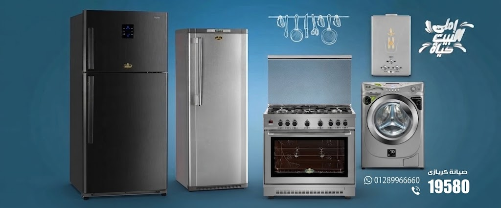


يصل المركز بأحدث تقنيات كشف الأعطال وأدوات الصيانة التي تسرع إجراءات التصليح وتحقيق الدقة في التشخيص، مع ضمان فواتير شفافة وخاصة ما بعد البيع. مركز صيانة كريازي مصر هو اختيار آمن لجميع العملاء الباحثين عن خدمة موثوقة تضمن استدامة وكفاءة الأجهزة المنزلية التي يمتلكونها.
يتميز مركز صيانة كريازي في مصر بتوفير خدمات صيانة شاملة تشمل: الغسالات، الثلاجات، الديب فريزر، السخانات، والتكييفات. كما يقدم الدعم الفني عبر الخطوط الساخنة والأرقام الموحدة مثل الخط الساخن الموحد 19580 التي تسهل التواصل مع العملاء، تنتشر فروع المركز في القاهرة، الإسكندرية، الجيزة، المنصورة، الزقازيق، والمحافظات الأخرى، مع التزام كامل بالمواعيد وتنظيم طلبات الصيانة لضمان راحة العميل.
تقديم الخدمة عبر فرق فنية متخصصة قادرة على التعامل مع مشاكل التجميد، ضعف التبريد، تسريب المياه، أو ضعف السحب. تواصل معنا عبر الخط الساخن 19580 لنصلك فوراً بقطع الغيار الأصلية.
يشمل الدعم الفني إصلاح الأعطال الميكانيكية والبرمجية، مشاكل العصر والتجفيف، مع توفير قطع غيار أصلية ماسة للتشغيل. احصل على الدعم السريع عبر الرقم الموحد 19580.
من أكثر الأجهزة استخداماً في المنازل المصرية، يوفر المركز حلولاً فورية لأعطال الموتور، تكون الثلج الكثيف، أو تسريب الغاز. اطلب خدمة الصيانة المنزلية السريعة عبر الخط الساخن 19580.
يتعامل الفريق مع مشاكل التشغيل، ضعف التبريد، الأعطال الكهربائية، أو أي قصور في الأداء بكفاءة عالية. استشر فنيين المركز المعتمدين الآن واتصل بـ 19580 لتأكيد طلبك.
للحصول على خدمة سريعة ومعتمدة لجميع الأعطال، يمكنك الآن الاتصال بـ رقم صيانة ثلاجات كريازي لحجز موعد زيارة الفني في منزلك.
ثلاجات كريازي دي فروست تعد من الأجهزة المنزلية الأساسية التي يعتمد عليها الأسر في مصر للحفاظ على الطعام طازجاً والمصورة المثالية. ولكن لضمان استمرار عمل الثلاجة بكفاءة عالية والحفاظ عليها من الأعطال الشائعة في ثلاجات كريازي، من الضروري الالتزام بعمليات الصيانة الدورية والصحيحة وفقاً لتعليمات المصنع.
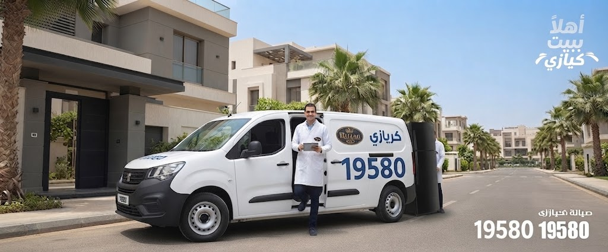
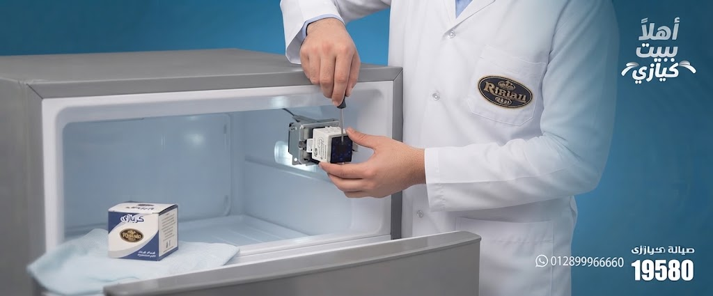
ثلاجات كريازي نو فروست تمثل خياراً مميزاً لمن يبحثون عن أجهزة تجمع بين التقنية الحديثة والخدمة المريحة، حيث تمنع تراكم الثلج تلقائياً دون الحاجة لإذابة الثلج يدوياً. للحفاظ على جودة وأداء هذه الثلاجات، تعتبر الصيانة الدورية مهمة لضمان استمرارية العمل وإطالة عمره.
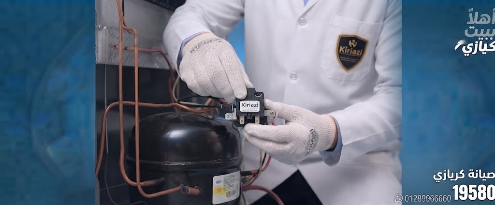
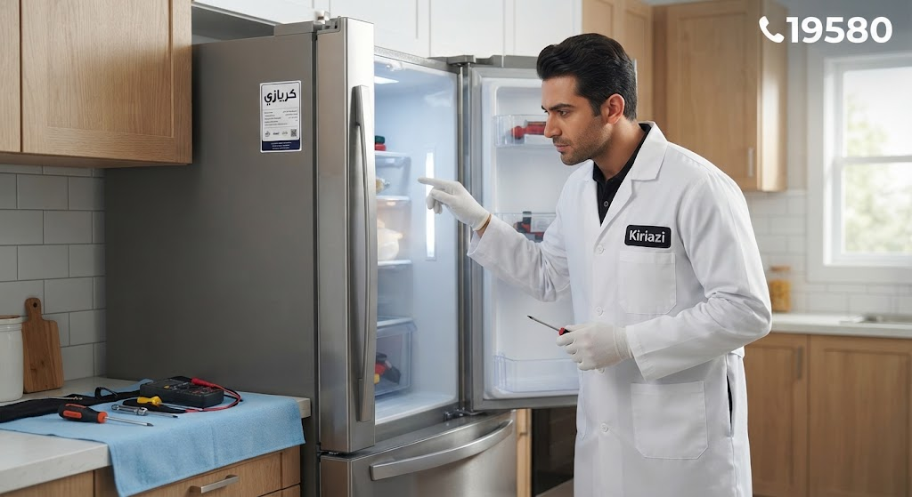
جواب: تمتلك ثلاجات نوفروست نظاماً يصنع تراكم الثلج تلقائياً، أما دي فروست تحتاج لإذابة الثلج يدوياً.
جواب: قم بتنظيف المكثف، تحقق من مروحة التبريد، وإذا استمر العطل اتصل بمركز الصيانة المعتمد.
جواب: بينما يمكن تنظيف الأجزاء الخارجية والداخلية البسيطة، يجب الاستعانة بفني متخصص للأعطال الكهربائية أو الميكانيكية.
جواب: نظافة دورية، استخدام فولو أصلية، وتقليل فتح الباب يحافظ على كفاءة الجهاز. صيانة ثلاجات كريازي نو فروست: حلول عملية للأشهر الأعطال، وكيفية الحفاظ على ثلاجة كريازي نو فروست وطرق الصيانة الآمنة في مصر. عند صيانة ثلاجات كريازي نو فروست تأكد من المراكز الأساسية للحفاظ على أداء الجهاز بأعلى كفاءة، والتقليل من الأعطال. لذا ينصح باتباع الإرشادات الدقيقة والاعتماد على مراكز صيانة كريازي المعتمدة لتحقيق أفضل النتائج.
| رمز العطل | المعنى | الحل المبدئي |
|---|---|---|
| E1 | مشكلة في حساس درجة الحرارة (الثرمستور) | افحص الحساس وقد يحتاج للتغيير |
| E2 | ارتفاع درجة حرارة الكابينة | تأكد من غلق الباب بإحكام وعدم تركه مفتوحاً |
| E3 | خلل في مروحة التوزيع الداخلية | افحص المروحة وتخلص من الثلج أو الغبار |
| E4 | عطل في سخان إذابة الثلج (Defrost Heater) | افحص السخان وقد يحتاج للاستبدال |
| E5 | مشكلة في حساس إذابة الثلج | تغيير حساس إذابة الثلج عند تلفه |
| E6 | مشكلة في الكومبريسور (الضغاط) | تأكد من عمل الضاغط، وقد يتطلب تدخل فني |
| E7 | خلل في لوحة التحكم الإلكترونية | افصل الثلاجة برهة وأعد التشغيل |
| E8 | انقطاع أو خلل في دائرة الكهرباء | افحص مصدر الكهرباء واستعن بفني عند الحاجة |
| E9 | تجميد زاد داخل الثلاجة أو الفريزر | لا تكدس الأطعمة، وتأكد من سلامة دورة الديفروست |
| E10 | مشكلة في حساس الباب | تأكد من غلق الباب جيداً وفحص الحساس |
للحصول على خدمة سريعة ومعتمدة لجميع الأعطال، يمكنك الآن الاتصال بـ رقم صيانة الديب كريازي
يُعد الديب فريزر الأفقي كريازي من الحلول المثالية لتخزين وحفظ الأطعمة بكميات كبيرة للأسر والمؤسسات بمختلف أنحاء مصر، مثل القاهرة والإسكندرية والمنصورة. لضمان استمرار كفاءة الجهاز وتجنب الأعطال المفاجئة التي قد تؤدي فقد محتوياته، من الضروري الاهتمام بالصيانة الدورية للديب فريزر والتعامل الذكي مع الأعطال المتكررة.
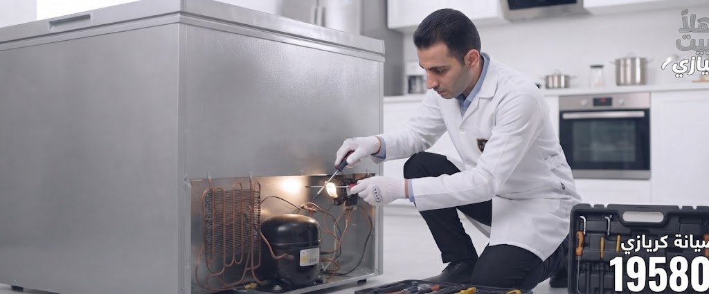
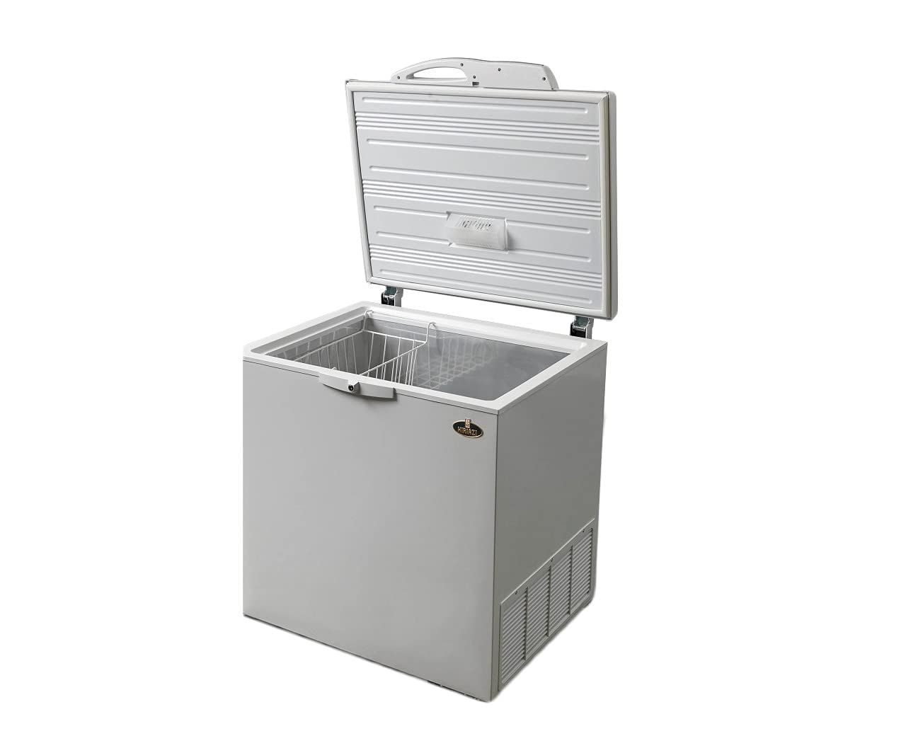
تتميز صيانة ديب فريزر رأسي كريازي بأنها من الخدمات الحيويّة للحفاظ على كفاءة الجهاز وضمان استمرار عمله بأعلى مستوى من الأداء، خصوصاً في ظل الظروف التشغيلية المختلفة. ديب فريزر كريازي يوفر تخزيناً منظماً بفضل تصميمه العمودي متعدد الأدراج.
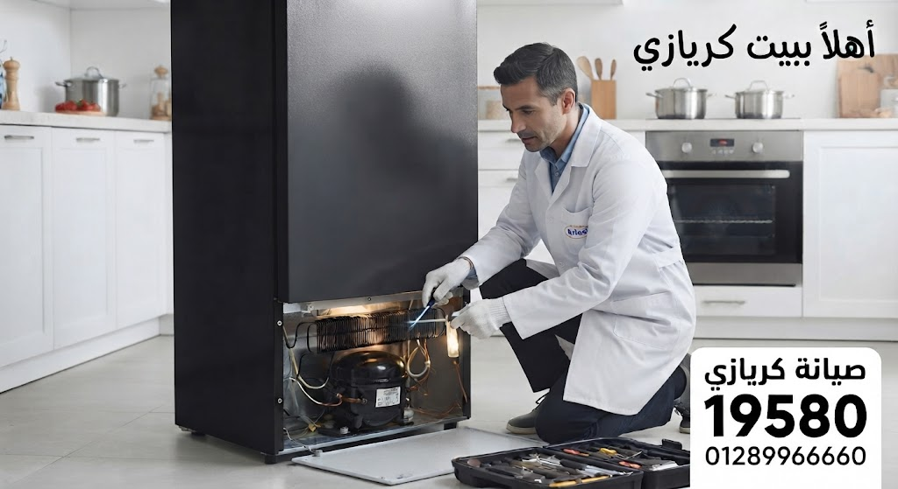
جواب: عند ملاحظة ضعف التبريد، تراكم ثلج غير طبيعي، أو تسرب مياه، يجب طلب فحص وصيانة فورية عبر الخط الساخن 19580.
جواب: يمكنك تنظيف الأجزاء الخارجية والكاوتش بانتظام، لكن الصيانة الفنية لنظام التبريد يجب أن تتم عبر مركز معتمد.
جواب: يختلف حسب نوع الخدمة والقطع، وعادة ما يتم تقديم ضمان معتمد على الإصلاح.
جواب: توفر مراكز صيانة معتمدة في معظم محافظات مصر، ويمكنك الاتصال مباشرة بالخط الساخن الموحد 19580 للاستفسار وطلب الدعم الفوري.
| رمز العطل | المعنى | الحل المبدئي |
|---|---|---|
| E1 | مشكلة في حساس الحرارة (الثرمستور) | تأكد من عمل الحساس أو استبداله |
| E2 | ارتفاع درجة حرارة الفريزر | افحص كفاءة التبريد وتأكد من إغلاق الباب جيداً |
| E3 | مشكلة في مروحة التوزيع الداخلية | تأكد من عمل المروحة وتنظيفها |
| E4 | عطل في سخان إذابة الثلج (Defrost Heater) | افحص السخان أو استبداله عند الحاجة |
| E5 | مشكلة في حساس إذابة الثلج (Defrost Sensor) | قد يحتاج الحساس إلى تغيير |
| E6 | مشكلة في الكومبريسور (الضاغط) | تأكد من عمل الضاغط وقد يحتاج تدخل فني |
| E7 | مشكلة في لوحة التحكم الإلكترونية | افصل الجهاز برهة وأعد التشغيل، إن استمر العطل استعن بفني |
| E8 | مشكلة في دائرة الكهرباء أو الجهد | افحص مصدر الكهرباء واستعن بفني عند الحاجة |
| E9 | تجميد زائد داخل الفريزر | تأكد من غلق الباب بإحكام وعدم تكديس الأطعمة |
| E10 | مشكلة في حساس الباب | افحص حساس الباب وتأكد من عمله |
للحصول على خدمة سريعة ومعتمدة لجميع الأعطال، يمكنك الآن الاتصال بـ رقم صيانة غسالات كريازي لحجز موعد زيارة الفني في منزلك.
صيانة غسالات كريازي أتوماتيك تحميل أساسي دليل شامل للحفاظ على أداء جهازك طول العمر، بات غسالات كريازي الأتوماتيك بتحميل أمامي مثالياً للكثير من الأسر في القاهرة والإسكندرية والمنصورة وأسيوط؛ لما توفره من كفاءة عالية في تنظيف الملابس وموفر الطاقة والمياه. ولكن ظل هذه الغسالات تعمل بكفاءة وخلو من الأعطال، يجب الاهتمام بالصيانة الدورية والتشخيص الدقيق لأي مشاكل قد تظهر.
تشمل عملية الصيانة عدة مراحل أساسية للحفاظ على كفاءة الجهاز، وهي:
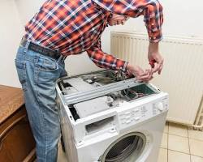
توصي كبرى شركات الصيانة في مصر، وخاصة في المناطق الحضرية مثل القاهرة والإسكندرية، بضرورة استخدام منظمات أمان وتجنب التحميل الزائد للغسالة للحفاظ على المحرك والأجزاء الداخلية. كما يشمل مراجعة دليل المستخدم بشكل دوري والاطلاع على رموز الأعطال لحل المشكلات بشكل فوري ودون تأخير.
يسعى الحفاظ على أداء غسالاتك الأتوماتيك من كريازي بتحميل أساسي أمراُ ضرورياً لراحة الأسرة واستمرارية جودة الغسيل. لضمان كفاءة الأعطال، طبق مبادئ الصيانة طبق صائغ الصيانة بشكل دوري واستعن بمراكز الخدمة المعتمدة في جميع المحافظات المصرية. صيانة غسالات كريازي أتوماتيك بتحميل أمامي يضمن العمر الطويل والجودة الفائقة.
تنتشر مراكز صيانة كريازي المعتمدة في محافظات رئيسية مثل القاهرة، الإسكندرية، المنصورة، الجيزة، والشرقية، مما يتيح بنية ترفيهية سرعة لجميع سابوغ الجمهورية. يختص كل مركز فريقنا مدرنا للتعامل مع جميع أنواع الأجهزة وضمان جودة الصيانة واستخدام قطع الغيار الأصلية.
صيانة غسالات كريازي أتوماتيك تحميل علوي أمر أساسي للحفاظ على أداء الجهاز وضمان العمر الطويل وكفاءة التشغيل للغسالة، خاصة في ظل الظروف المناخية المتغيرة في مصر. يمثل مركز صيانة كريازي للغسالات الأتوماتيك المعتمد الخيار الأفضل لمعالجة الأعطال واستبدال قطع الغيار الأصلية بسرعة واحترافية.
للتواصل السريع: اتصال بـالخط الساخن لصيانة كريازي 19580 للحصول على قطع غيار أصلية ودعم فني فورى في جميع محافظات مصر.
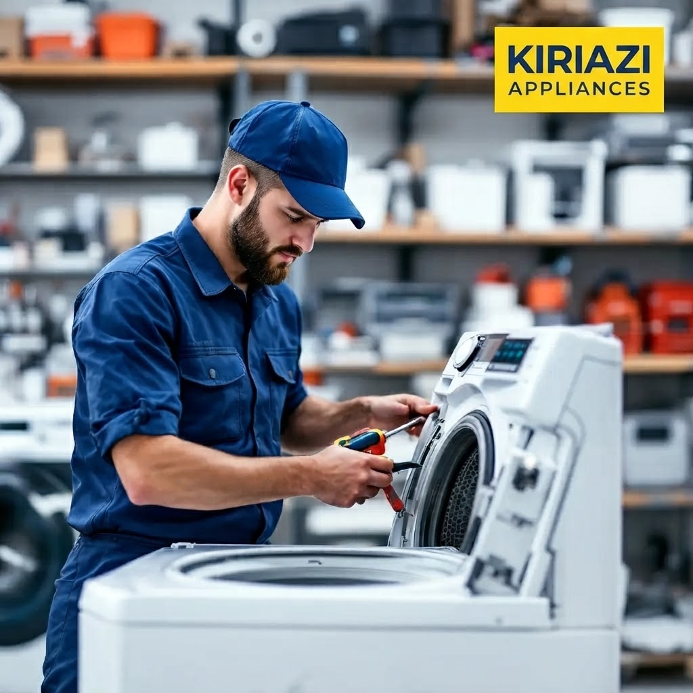
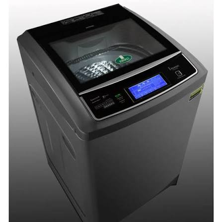
جواب: تبدأ عملية الفحص بقراءة رموز الأعطال على شاشة الفسالة، ثم التحقق من أجزاء الجهاز مثل الملاث والخرطوم والمصفاة وتنظيمها أو استبدالها عند الضرورة.
جواب: ينصح بفحص وتستيف الفلاتر شهرياً، واختبار أداة المضمضة كل ثلاثة أشهر، وإجراء صيانة دورية للمحرك والأجزاء الداخلية مرة سنوياً.
جواب: نعم، لأن المساحيق الرديئة قد تسبب تراكم الأوساخ وتؤثر على كفاءة الغسل، لذا ينصح باستخدام المساحيق الموصى بها من الشركة المصنعة.
جواب: قطع الغيار الأصلية من كريازي تزيد من العمر الافتراضي للجهاز وتمنع وقوع الأعطال المتكررة، لذا يُنصح باستبدال القطع التالفة عبر شركات الصيانة المعتمدة، أو الاتصال بالخط الساخن 19580.
| رمز العطل | المعنى | الحل المبدئي |
|---|---|---|
| E01 | مشكلة في باب الغسالة (غير مغلق جيداً) | تأكد من إغلاق الباب بإحكام |
| E02 | مشكلة في ملء المياه | افحص حنفية المياه والخرطوم |
| E03 | مشكلة في طرد المياه | تأكد من نظافة فلاتر المكنسة |
| E04 | زيادة كمية المياه داخل الحلة | افحص حساس مستوى المياه |
| E05 | مشكلة في التسخين (السخان لا يعمل) | راجع السخان أو الثرموستات |
| E06 | مشكلة في حساس الحرارة | قد يحتاج الحساس إلى تغيير |
| E07 | مشكلة في الموتور أو دوران الحلة | افحص الموتور والسير |
| E08 | مشكلة في لوحة التحكم | افصل الغسالة وأعد التشغيل |
| E09 | عطل في الطلمبة | افحص الطلمبة أو قم باستبدالها |
| E10 | مشكلة كهربائية أو في حساس الضغط | تحتاج فحص من فني متخصص |
تُعد تكييفات كريازي بارد من الأجهزة الأساسية في المنازل والمكاتب بمختلف المناطق المصرية، لما توفره من تبريد فعال وراحة تامة في فصل الصيف الحار. وللحفاظ على هذه الكفاءة وضمان استمرار عمل التكييف بأعلى جودة ممكنة، لابد من الالتزام بعمليات الصيانة الدورية المتخصصة التي تضمن أداءً مستقراً ويطيل عمر الجهاز.
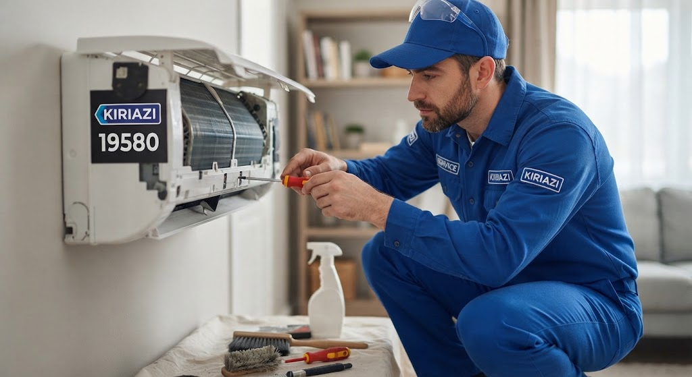
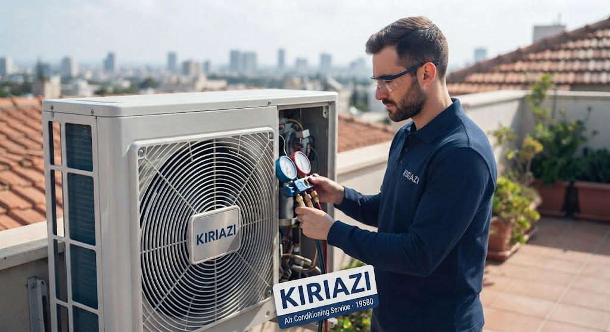
تُعد تكييفات كريازي بارد وساخن من الأجهزة المهمة التي تخدم المنازل والمكاتب في مصر، خاصة مع التغيرات المناخية بين الصيف الشتاء البارد. للحفاظ على كفاءة التكييف وضمان استمرار عمله بشكل ممتاز، تتطلب هذه الأجهزة صيانة دورية ومنتظمة لكافة مكوناتها، وهذا ما يضمته مركز صيانة كريازي المعتمد مع فريق متخصص من الفنيين ذوي الخبرة.
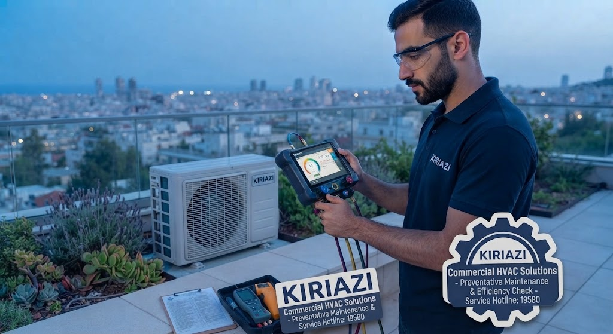
للحصول على الدعم السريع وقطع الغيار الأصلية، اتصل الآن بالخط الساخن لصيانة كريازي 19580 في جميع محافظات مصر.
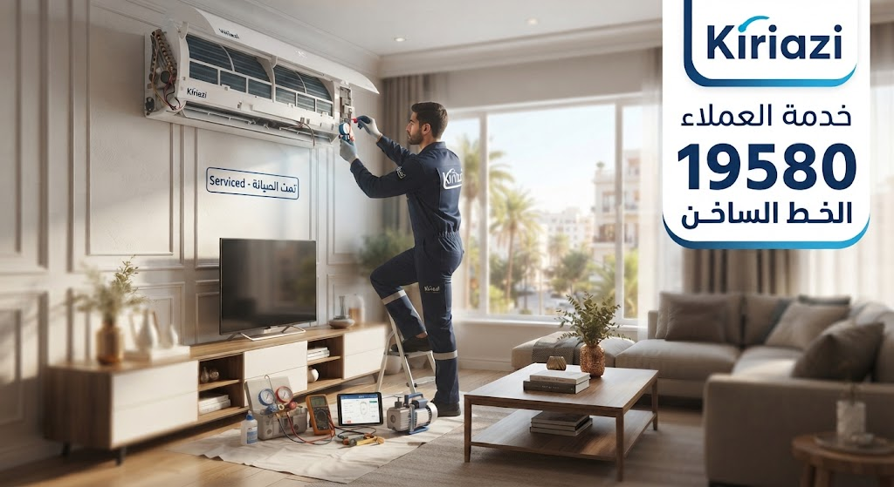
جواب: عند ملاحظة ضعف التبريد أو التدفئة، تسرب المياه، أو أصوات غير معتادة، يجب إجراء فحص وصيانة فورية.
جواب: يمكنك تنظيف الفلاتر بانتظام، لكن الصيانة الفنية مثل فحص الغاز وتنظيف المكثف يجب أن تتم عند فني متخصص.
جواب: يُفضل إجراء الصيانة مرتين في السنة، قبل فصل الصيف وفصل الشتاء.
جواب: نعم، استخدام قطع الغيار الأصلية يضمن عمل الجهاز بكفاءة ويحافظ على عمره الافتراضي، ويمكنك طلب الدعم عبر الخط الساخن 19580.
| رمز العطل | المعنى | الحل المبدئي |
|---|---|---|
| E1 | مشكلة في حساس درجة الحرارة الداخلي | افحص الحساس أو قم بتغييره عند الحاجة |
| E2 | مشكلة في حساس درجة الحرارة الخارجي | تأكد من عمل الحساس أو استبداله |
| E3 | خلل في ضغط غاز الفريون أو تسريب | افحص مستوى الفريون واستعن بفني للتعبئة |
| E4 | ارتفاع درجة حرارة الضاغط (الكومبريسور) | تأكد من نظافة المكثف وتدفق الهواء حول الوحدة الخارجية |
| E5 | مشكلة في الاتصال بين الوحدة الداخلية والخارجية | افحص الأسلاك والتوصيلات جيداً |
| E6 | عطل في مروحة الوحدة الداخلية | افحص المروحة ونظفها أو استبدالها |
| E7 | عطل في لوحة التحكم الإلكترونية | افصل الكهرباء دقيقة ثم أعد التشغيل، وإن استمر العطل استعن بفني |
| E8 | انسداد في فلتر الهواء أو ضعف تدفق الهواء | نظف فلاتر الهواء بانتظام |
| F1 | خلل في حساس الفولت الكهربائي | افحص مصدر الكهرباء واستعن بفني كهرباء عند الحاجة |
| F2 | مشكلة في حساس درجة حرارة السحب | قد يحتاج الحساس إلى صيانة أو تغيير |
نحن هنا لمساعدتك على مدار الساعة. اتصل بنا مباشرة، راسلنا عبر الواتساب، أو اترك بياناتك وسيقوم فريق الدعم الفني بالتواصل معك فوراً.
املأ البيانات التالية وسيتم تحويلك فوراً لتأكيد الطلب عبر الواتساب:
مركز صيانة كريازي المعتمد في مصر - نلتزم بحماية بياناتك الشخصية وتوضيح شروط الخدمة بشفافية تامة.
نحن في مركز صيانة كريازي نولي أهمية كبرى لخصوصيتك:
نرجو قراءة البنود التالية بعناية: